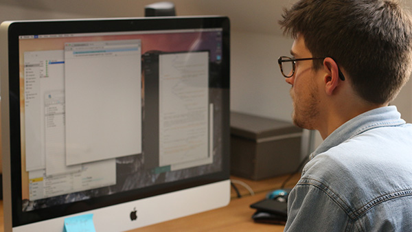

I aim for simple solutions to help people articulate their messages and enjoy working with people, towards change.
I take great pride in my craft and a curiosity to learn new skills can be seen across my body of work. I believe well-crafted design comes from keen insight and understanding.
I specialise in bespoke, one-off, tailored communications. Regardless of medium my design aims to help people connect to audiences in a meaningful way. I like working with people who are excited about what they make or do. If that sounds like you and want to work together please get in touch.
I share and occastionally write on LinkedIn. For bits & pieces I made, see or do I use Tumblr. This site, and others are on my Github.